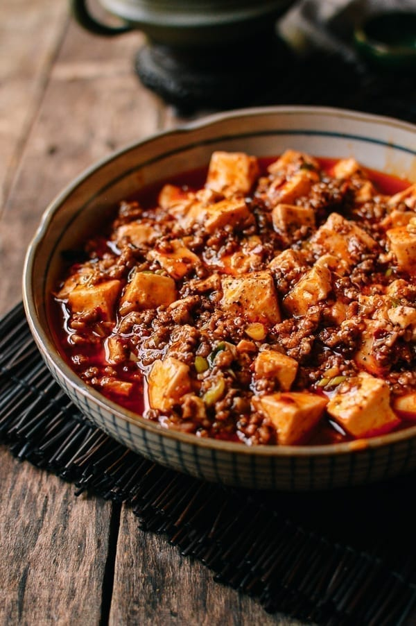

Mapo Tofu

Description
This is a recipe for Mapo Tofu
Mapo Tofu is a delicious asian dish that is very popular. Its a savoury and spicy soft tofu dish that melts in the mouth and gives your pallette an incredible numbing sensation!
Ingredients
- Doubanjiang
- Sichuan peppercorns
- Chilli oil
- Ground pork or beef
- Green onions or spring onions
- Cornstarch
- Tofu
Steps
- Fry the Sichuan peppercorns in the oil to infuse the aroma
- Cook the ground pork with doubanjiang
- Once the pork is cooked, add the green onions and stir a few times
- Add the broth and braise with the cover on
- Drizzle in the cornstarch slurry to thicken the sauce